Post proposto em Workshop de Data Science na Prática do Curso-r.
Este documento analisa 32833 músicas extraídas do Spotify com os objetivos de:
Na seção 2 discutiremos o primeiro objetivo acima e na seção 3 vamos analisar os gêneros musicais. Vamos utilizar como método principal de investigação análises descritivas tais como gráficos, tabelas e cálculo de sumários e, na última seção, vamos organizar as conclusões do estudo.
Dicionário das variáveis:
| track_id | track_name | track_artist | track_popularity | track_album_id | track_album_name | track_album_release_date | playlist_name | playlist_id | playlist_genre | playlist_subgenre | danceability | energy | key | loudness | mode | speechiness | acousticness | instrumentalness | liveness | valence | tempo | duration_ms |
|---|---|---|---|---|---|---|---|---|---|---|---|---|---|---|---|---|---|---|---|---|---|---|
| 6f807x0ima9a1j3VPbc7VN | I Don’t Care (with Justin Bieber) - Loud Luxury Remix | Ed Sheeran | 66 | 2oCs0DGTsRO98Gh5ZSl2Cx | I Don’t Care (with Justin Bieber) [Loud Luxury Remix] | 2019-06-14 | Pop Remix | 37i9dQZF1DXcZDD7cfEKhW | pop | dance pop | 0.748 | 0.916 | 6 | -2.634 | 1 | 0.0583 | 0.1020 | 0.00e+00 | 0.0653 | 0.518 | 122.036 | 194754 |
| 0r7CVbZTWZgbTCYdfa2P31 | Memories - Dillon Francis Remix | Maroon 5 | 67 | 63rPSO264uRjW1X5E6cWv6 | Memories (Dillon Francis Remix) | 2019-12-13 | Pop Remix | 37i9dQZF1DXcZDD7cfEKhW | pop | dance pop | 0.726 | 0.815 | 11 | -4.969 | 1 | 0.0373 | 0.0724 | 4.21e-03 | 0.3570 | 0.693 | 99.972 | 162600 |
| 1z1Hg7Vb0AhHDiEmnDE79l | All the Time - Don Diablo Remix | Zara Larsson | 70 | 1HoSmj2eLcsrR0vE9gThr4 | All the Time (Don Diablo Remix) | 2019-07-05 | Pop Remix | 37i9dQZF1DXcZDD7cfEKhW | pop | dance pop | 0.675 | 0.931 | 1 | -3.432 | 0 | 0.0742 | 0.0794 | 2.33e-05 | 0.1100 | 0.613 | 124.008 | 176616 |
| 75FpbthrwQmzHlBJLuGdC7 | Call You Mine - Keanu Silva Remix | The Chainsmokers | 60 | 1nqYsOef1yKKuGOVchbsk6 | Call You Mine - The Remixes | 2019-07-19 | Pop Remix | 37i9dQZF1DXcZDD7cfEKhW | pop | dance pop | 0.718 | 0.930 | 7 | -3.778 | 1 | 0.1020 | 0.0287 | 9.40e-06 | 0.2040 | 0.277 | 121.956 | 169093 |
| 1e8PAfcKUYoKkxPhrHqw4x | Someone You Loved - Future Humans Remix | Lewis Capaldi | 69 | 7m7vv9wlQ4i0LFuJiE2zsQ | Someone You Loved (Future Humans Remix) | 2019-03-05 | Pop Remix | 37i9dQZF1DXcZDD7cfEKhW | pop | dance pop | 0.650 | 0.833 | 1 | -4.672 | 1 | 0.0359 | 0.0803 | 0.00e+00 | 0.0833 | 0.725 | 123.976 | 189052 |
Nesta seção vamos analisar quais variáveis da nossa base ajudam a discrimar as múscias muito populares das pouco populares. Antes disso, entretanto, vamos analisar o padrão geral de variação do score de popularidade.
Na tabela abaixo encontram-se algumas estatísticas que nos ajudam a qualificar o padrão de variação do score de popularidade.
| Indicador | Valor do indicador |
|---|---|
| Média do Score | 42,48 |
| Mediana do Score | 45,00 |
| Desvio Padrão do Score | 24,98 |
| Coeficiente de Variação | 0,59 |
Já no gráfico abaixo verifica-se que embroa a média e a mediana do score fiquem em torno de 45 pontos, existe uma concentração ao redor do 0 também.
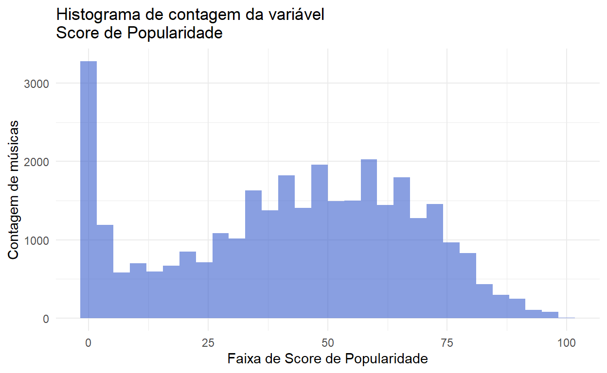
Agora que qualificamos o perfil de variação da variável Score de popularidade, vamos partir para uma análise da relação desta variável com as demais da base. Vamos começar identificando ou não uma relação da variável Score com o ano de lançamento da múscia.
No gráfico abaixo nota-se uma tendência de queda na popularidade média das músicas ao longo do tempo, mas com uma retomada íngrime a partir de 2010.
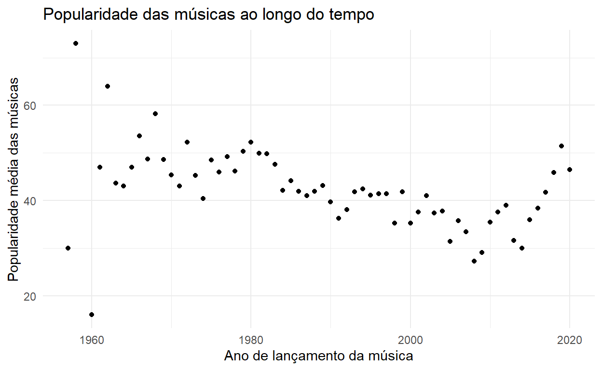
Entretanto, esse comportamento aparentemente é causado pelo percentual de músicas na concentração inferior da distribuição do score de popularidade, que identificamos antes neste texto. O gráfico abaixo ilustra que o percentual de músicas com popularidade inferior a 10 subiu de cerca de 10% em 1960 a cerca de 40% em 2010.
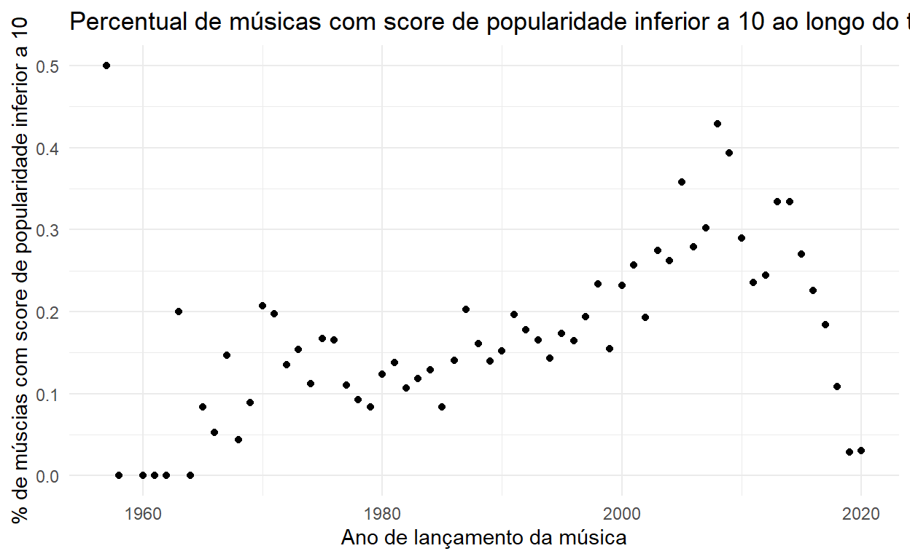
Tendo identificado que músicas lançadas em diferentes anos tem scores de popularidade bem distintos, vamos partir para a análise da variável gênero musical. Na tabela abaixo podemos comparar algumas estatísticas da popularidade associada a cada gênero. Com exceção do gênero Eletric Dance Music (EDM), o gênero musical não parece ser um fator determinante para a popularidade da música.
| Gênero Musical | Média do Score | Mediana do Score | Desvio Padrão do Score | Coeficiente de Variação |
|---|---|---|---|---|
| EDM | 34,83 | 36,00 | 23,15 | 0,66 |
| LATIN | 47,03 | 50,00 | 25,42 | 0,54 |
| POP | 47,74 | 52,00 | 25,16 | 0,53 |
| R&B | 41,22 | 44,00 | 25,89 | 0,63 |
| RAP | 43,22 | 47,00 | 23,30 | 0,54 |
| ROCK | 41,73 | 46,00 | 24,83 | 0,59 |
A próxima variável que analisaremos será a variável artista. Entretanto, na base existem 10693 pessoas. Por isso para conseguir avaliar o impacto do artista na popularidade vamos analisar a produtividade de cada artista em números de músicas.
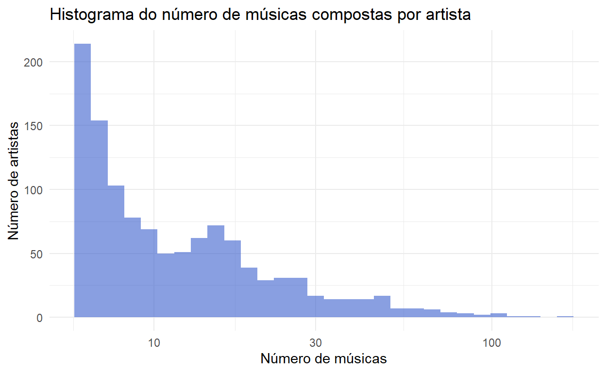
Nota-se que a grande maioria dos artistas são autores de pouqíssimas músicas. 6 artistas ou grupos musicais são autores de 100 ou mais canções na base de dados. Do gráfico abaixo identicamos que quanto maior o número de músicas escritas, há uma tendência à convergência da popularidade média do artista (ou banda) próxima a 50. Martin Garrix e Queen são os primeiros na lista de maiores compositores e possuem média de popularidade de 47,2 e 43, respectivamente.
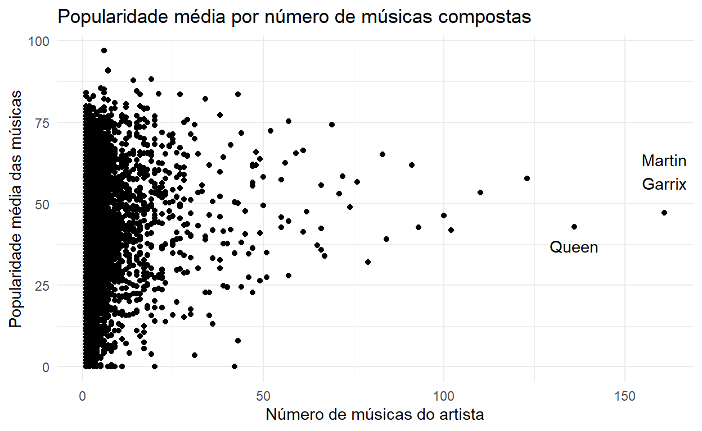
Ao observar de maneira mais geral, as variáveis abaixo não apresentam nenhum padrão facilmente observável, entretanto, na segunda seção desta análise serão estudadas se essas mesmas variáveis possuem algum tipo de padrão identificável a depender do gênero musical.
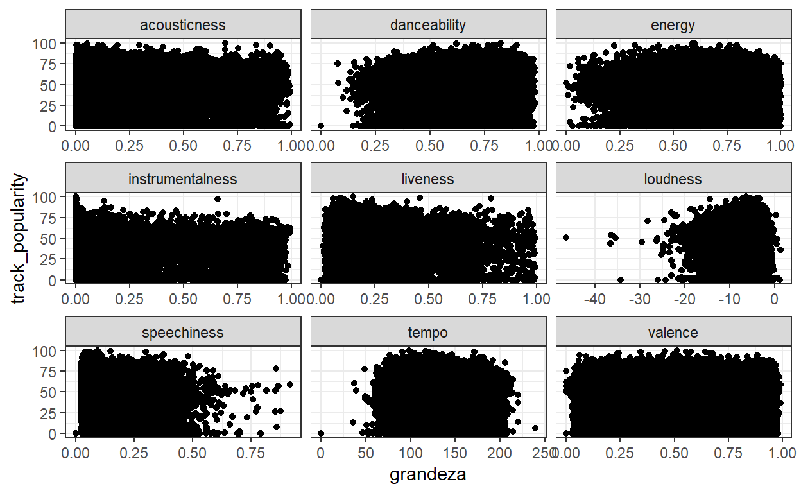
Na análise de correlação entre essas variáveis, identifica-se que a acústica (acousticness) e energia (energy) das músicas possuem a menor associação negativa, enquanto que energia e volume (loudness) possuem a associação positiva mais próxima de 1. A partir desta primeira visão não é possível identificar uma associação relevante entre a popularidade da música e variáveis com acústica, dançabilidade, energia, instrumentalidade, vivacidade, volume, fala, ritmo e valência (medida que descreve a positividade musical transmitida por uma faixa).
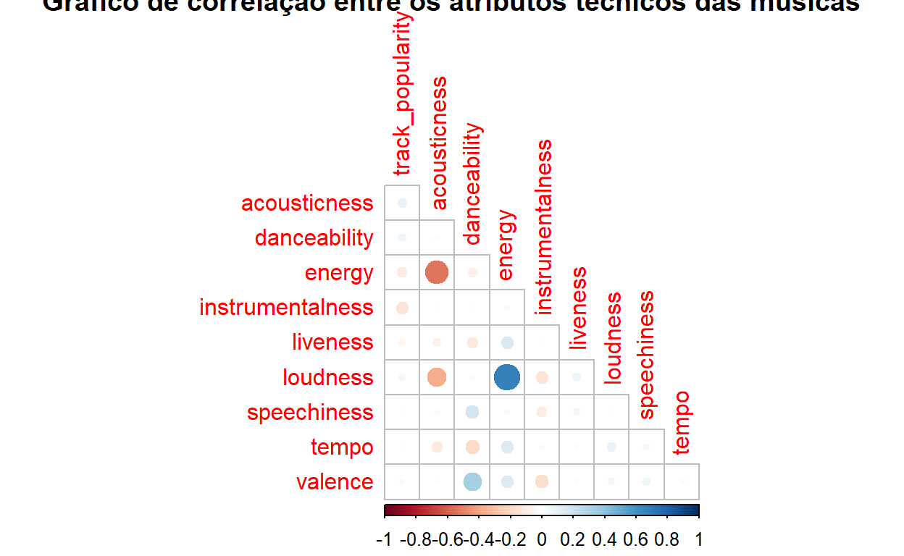
Como forma de aumentar o entendimento a cerca de cada gênero musical e suas especificidades, vamos analisar este conjunto de variáveis separadamente. Para tanto, foram calculadas as médias das variáveis apresentadas abaixo por cada estilo musical, de forma que os gráficos abaixo apresentam as caracterísicas de forma relativa às médias máximas observadas.
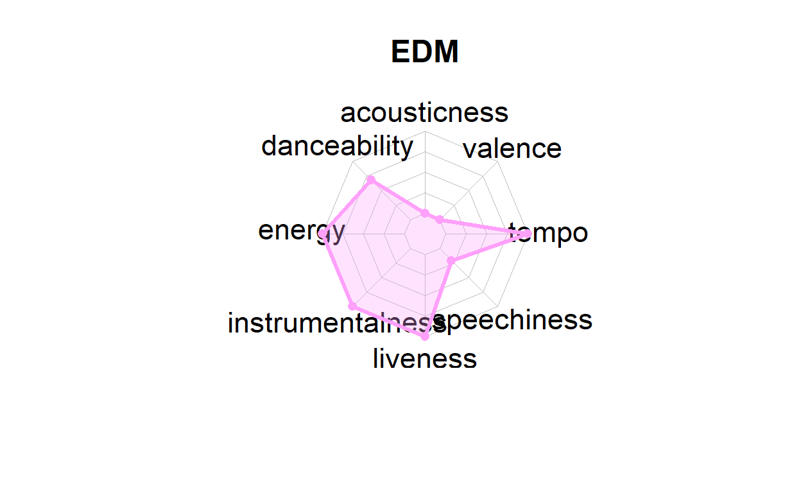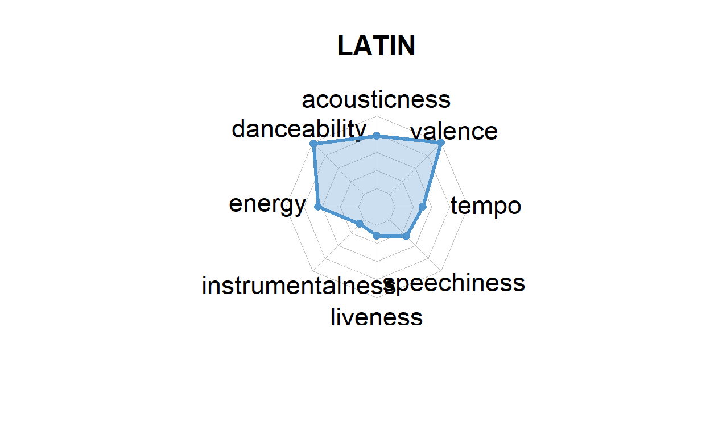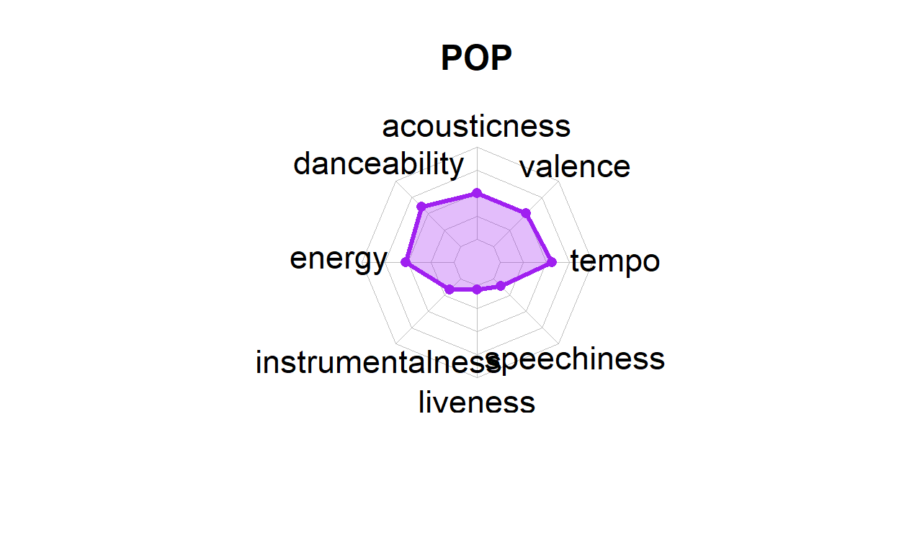
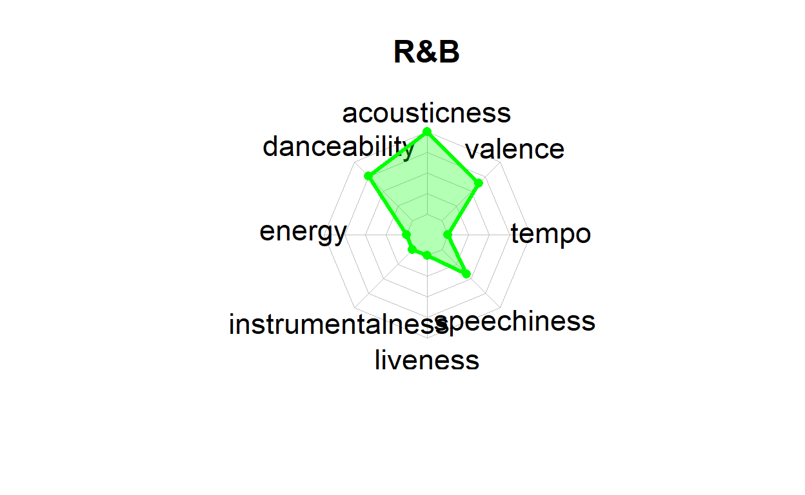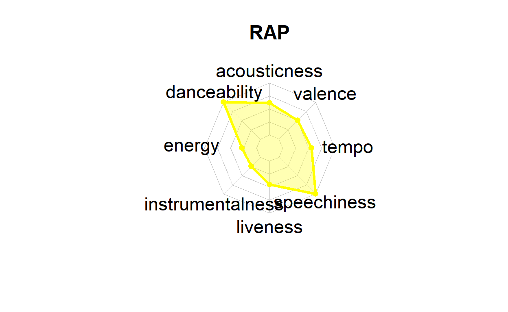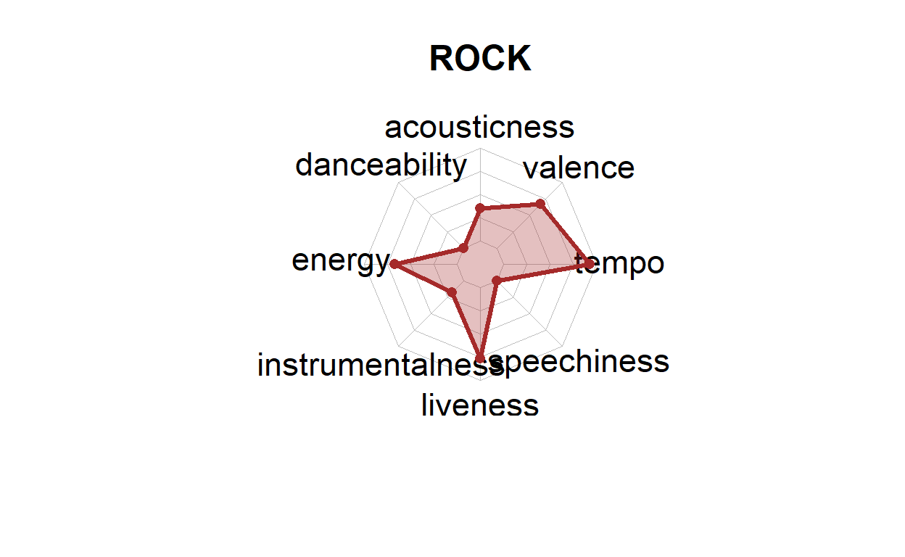
Dos gráficos acima podemos notar que o gênero EDM possui, em média, mais características de energia, instrumentalidade, da categoria liveness e mais batidas por minuto, medida pela variável tempo, entretanto, apresentam músicas com baixa valência (valence), indicando músicas mais tristes e deprimidas. As músicas latinas se caracterizam por alta dançabilidade, por possuírem alto grau de postividade e alegria (alto índice valência) e acústica. O RAP se caracteriza por músicas com muitas palavras (speechiness) e por possuírem um alto grau de dançabilidade.
O R&B apresenta altos níveis de dançabilidade, valência e o maior grau de acústica. Já o Rock tem como característica músicas com mais batidas por minuto, alto probabilidade de músicas executadas ao vivo e são mais enérgicas. Por último, o POP apresenta características técnincas de maior energia e dançabilidade.
A variável volume (loudness) mede a intensidade geral das músicas em escala de decibéis (dB), variando, geralmente, entre -60 e 0, esta medida é útil para comparar o volume relativo das faixas. Assim, músicas do gênero Rock e R&B são mais intensas do que as dos demais genêros.
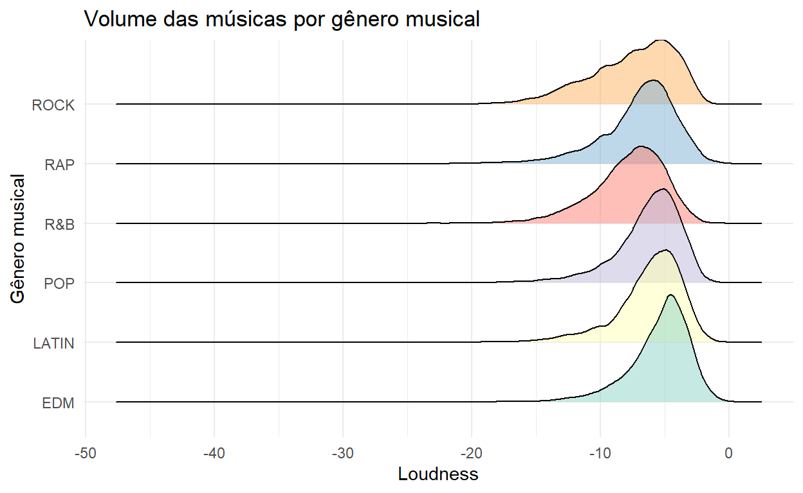
Em relação à duração das músicas, identifica-se que R&B e Rock possuem músicas, na média, que são mais longas quando comparadas com as músicas latinas, pop e EDM. Já o gênero RAP possui, na média, músicas com menor duração, quando comparadas com os demais gêneros analisados.
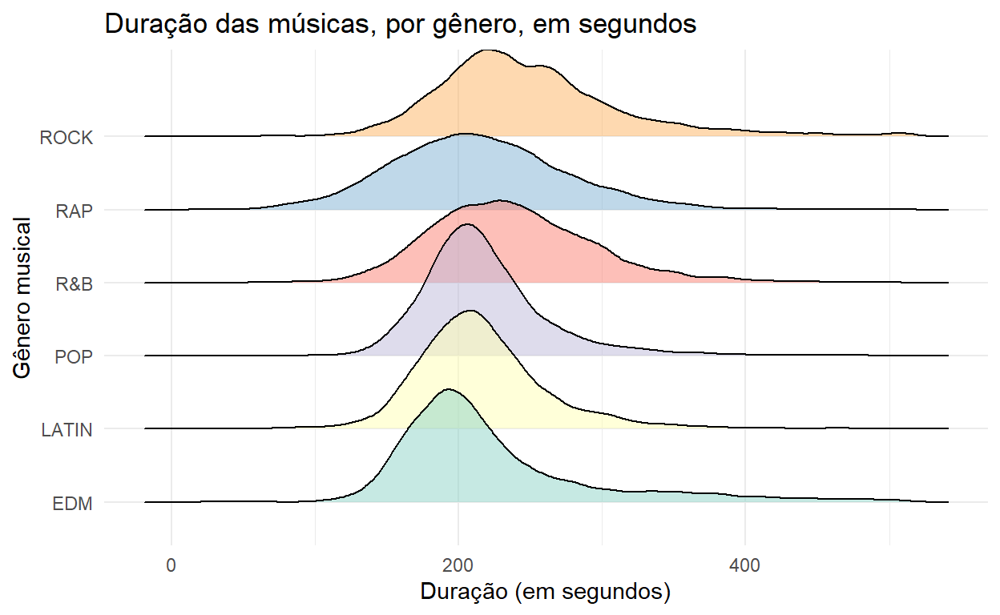
O gênero Eletronic Dance Music possui a maior dispersão na duração das músicas, apresentando uma das maiores médias entre os gêneros analisados, entretanto, apresenta a menor duração mediana destes gêneros, assim, neste estilo musical, são observadas músicas com menos de 2 minutos de duração, até músicas com quase 7 minutos de duração. O Rock também apresenta grande dispersão de valores na duração de suas músicas.
| playlist_genre | Duração média da música | Duração mediana da música | Desvio Padrão |
|---|---|---|---|
| EDM | 222,54 | 204,00 | 69,24 |
| LATIN | 216,86 | 210,75 | 48,40 |
| POP | 217,77 | 211,09 | 45,31 |
| R&B | 237,60 | 232,15 | 57,85 |
| RAP | 214,16 | 210,81 | 60,27 |
| ROCK | 248,58 | 237,56 | 65,48 |
Com relação ao primeiro objetivo desta análise, concluímos descritivamente que os fatores relevantes para a popularidade de uma música são a época do seu lançamento e característica das pessoas que compuseram a música. Identificamos que a longevidade e número de músicas das pessoas tem relação com a popularidade de suas músicas.
A partir do segundo objetivo, podemos concluir que, quando os fatores são observados por gênero musical, são perceptíveis determinados padrões existentes nos gêneros musicais, que podem explicar, entre outras coisas, a popularidade das músicas de cada gênero.